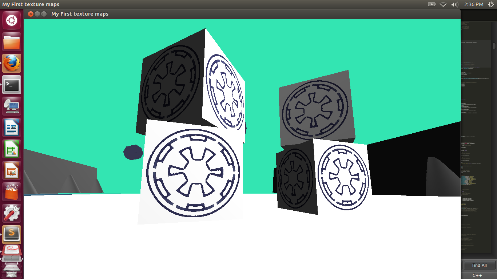

A long time ago in a galaxy far,
far away...
It is a dark time for the Rebellion. Although the Death Star has been destroyed,
Imperial troops have driven the Rebel forces from their hidden base and pursued
them across the galaxy.
Evading the dreaded Imperial Starfleet, a group of freedom fighters led by Luke Skywalker has established a new secret base on the remote ice world of Hoth.
The Rebel Alliance base on Hoth is under attack! Defend your friends and allies
as they escape the planet. Tie Fighters will come rushing in and it's
your job, as the pilot of a Snowspeeder, to destroy as many as you can!
Game Interface
The Tie Fighter, Cubes, and Walls are all hierarchically modeled.
The Speeder is from TurboSquid.com.

The Tie Fighters and Cubes have animated explosions. This is done in the vertex shader. The first step is to send the vertices along a vector. In this case I use the normal vector, but any vector will do. I also use a random scalar so that vertices which share the same normal or similar normal vectors don't have uniform motion. In order to add another element of chaos, the vertices are next multiplied by a rotation matrix. The angle of rotation is on a timer starting from the moment of collision. The last step is to decrement the y-values of the vertices to represent gravity.
Chapter 11 :: Advanced Shader Usage :: Geometry Shaders by Rendering Wonders